3.3. μC-Laptop Communication#
We learned how to upload a compiled binary to the μC in the last section. Specifically, a code that would print Hello World! to the ‘Standard Input Output’ was uploaded. You might be wondering how we can see this output from the μC. Following subsections show steps on how to do exactly that using a software called ‘CoolTerm’ on both Windows and Mac devices.
3.3.1. MacOS#
Download CoolTerm for Mac from this website as shown below.
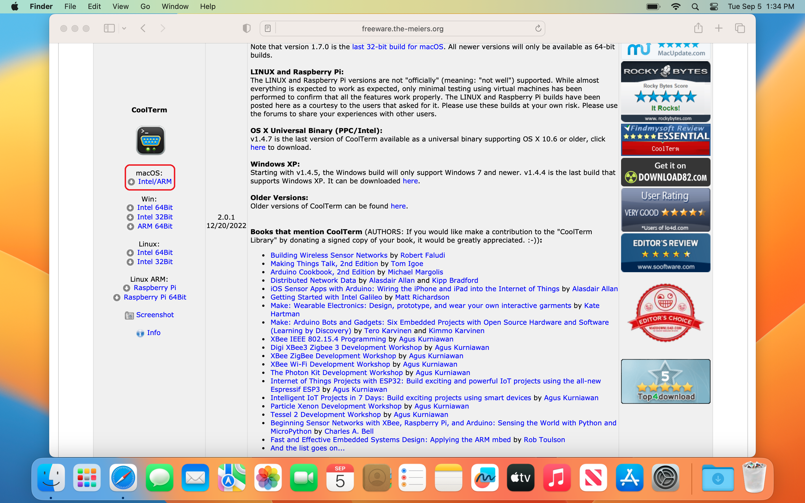
Open the downloaded
CoolTermMac.dmgfile to install CoolTerm. Don’t forget to drag and drop the ‘CoolTerm’ icon to the ‘Applications’ folder as shown below.


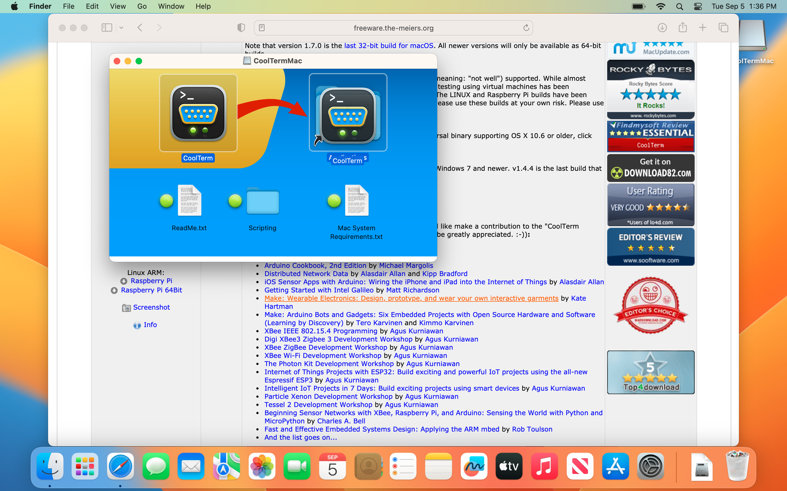

Mac will prevent the application from running when you double-click the ‘CoolTerm’ icon from the ‘Applications’ folder as shown below.


To force run the app, right-click on the ‘CoolTerm’ icon and then click on ‘Open’ as shown below.

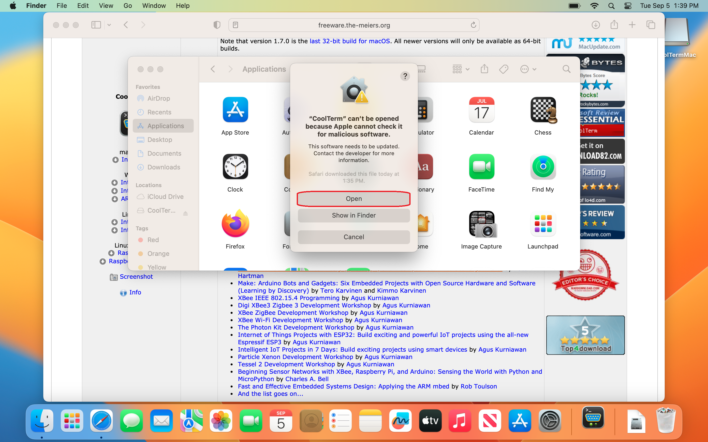
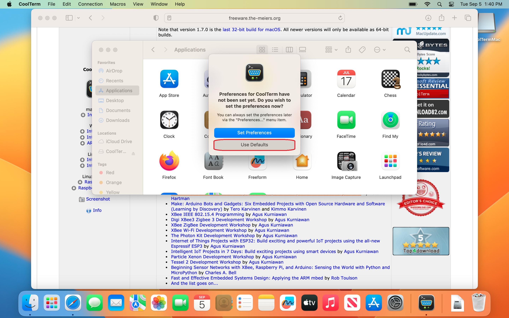

Note the currently available ports by following the steps below. In my case, there was only one port available, i.e. Bluetooth-Incoming-Port.
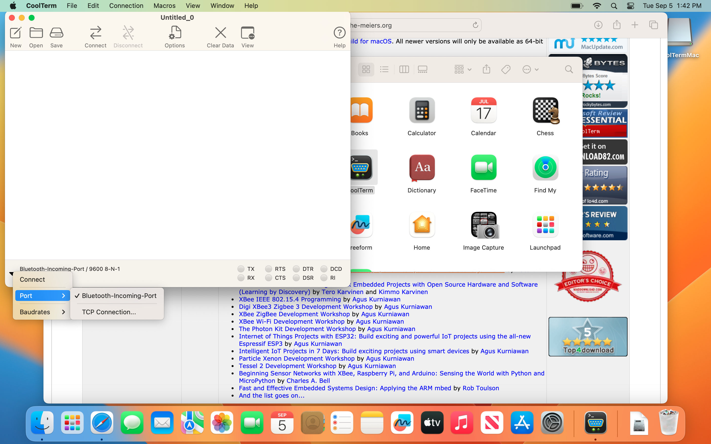
Connect the μC to the Mac without pressing the
BOOTSELbutton. Now, re-scan the COM ports so that the μC is detected.
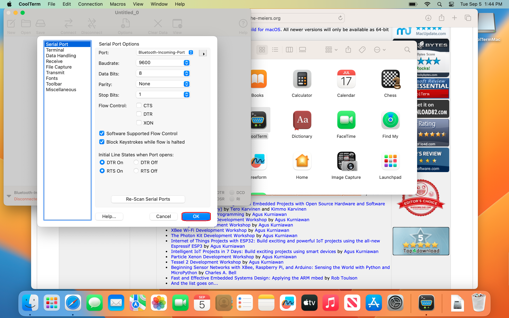
Check for the available ports again. You should see a new port in the list. Note the newly added port, since it should stay the same in your Mac for your μC. In my case, it turned out to be usbmodem1422201, as visible in the image below. Select the newly added port.
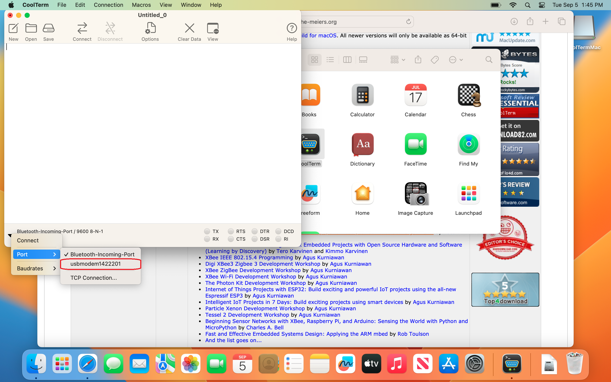
Click on ⇄ Connect button to start communication between the μC and the Mac. You should see ‘Hello World!’ being printed out as shown below.

You can stop the communication by clicking on the Disconnect button.
At the time of closing, CoolTerm may ask you to save the settings. Click on Don’t Save button.
3.3.2. Windows#
Download CoolTerm from this website. The ‘Intel 64Bit’ version should work for most Windows 10/11 users as shown below.

Open the downloaded
CoolTermWin64Bit.zipfile. Copy the folderCoolTermWin64Bitto wherever you like.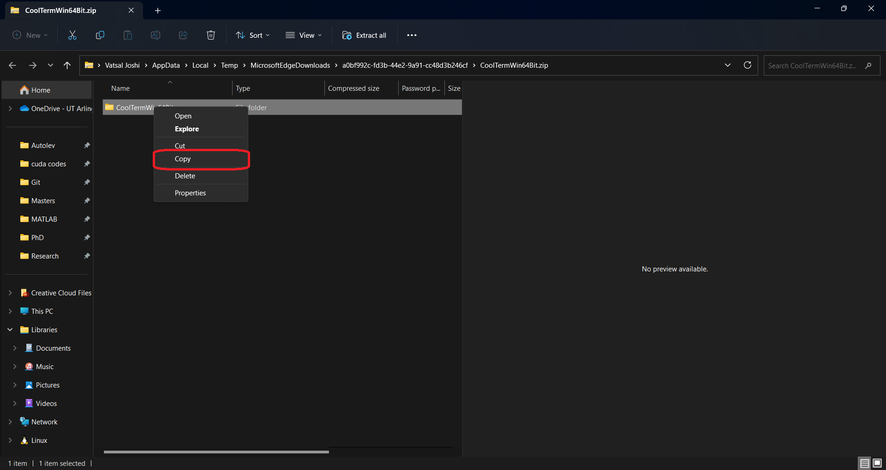
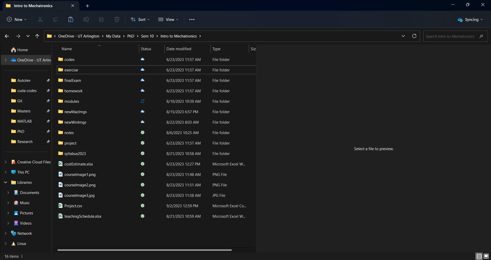


Run CoolTerm, make sure that the μC is not connected to the computer. Windows may not recognize the app. In that case, you may have to force run the app as shown below.
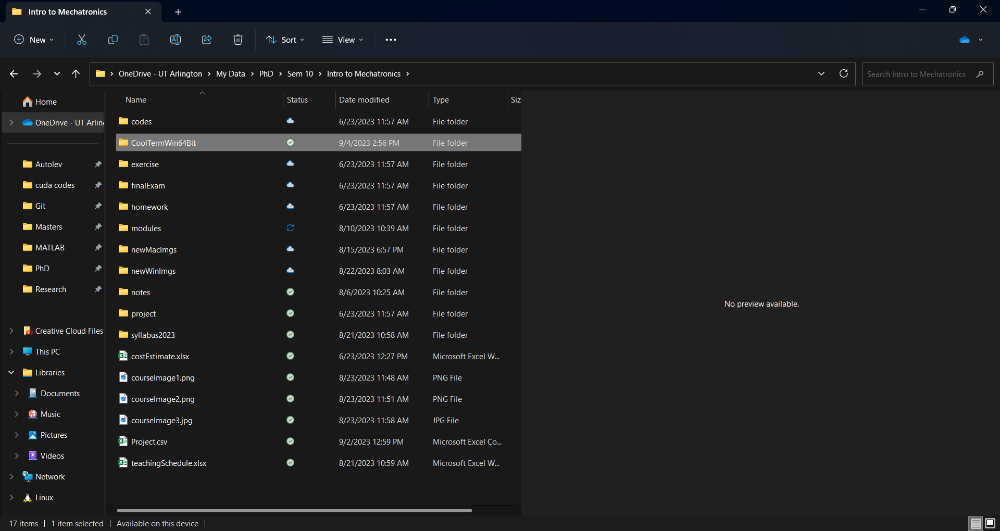


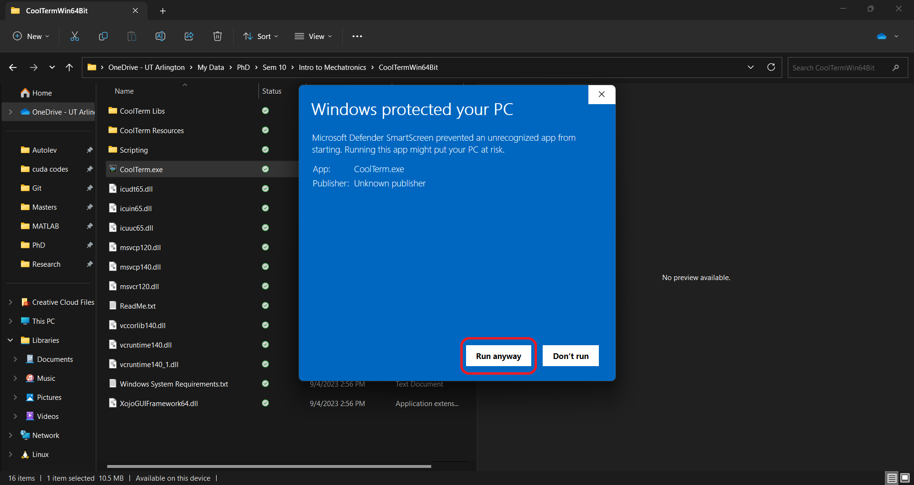
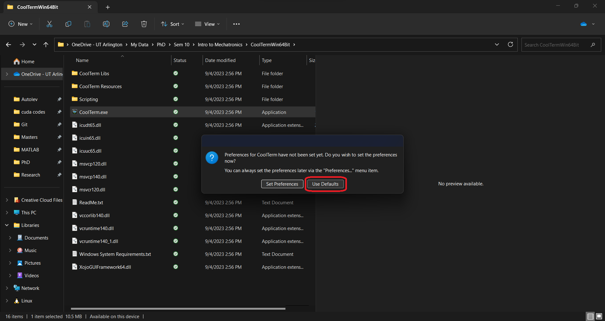

Note the currently available ‘COM’ port numbers by following the steps below. In my case, there are three COM ports available, i.e. COM1, COM3 and COM4.
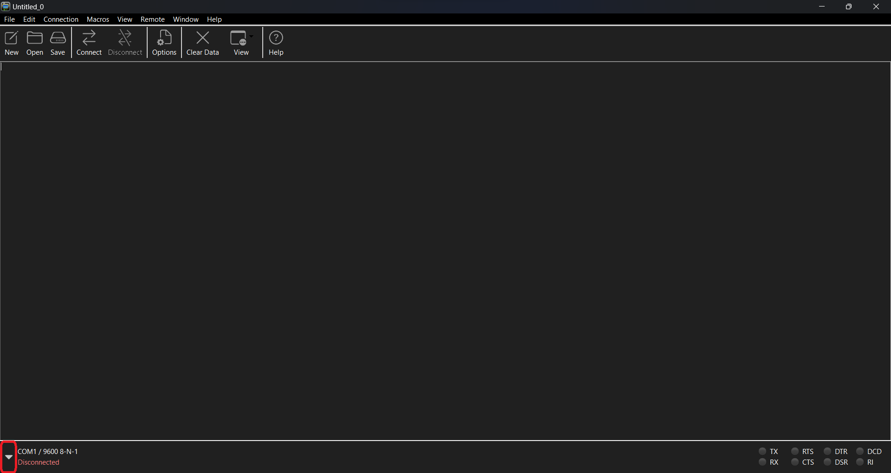
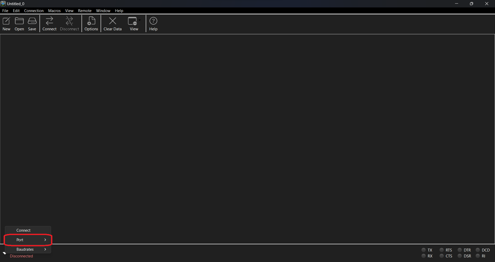
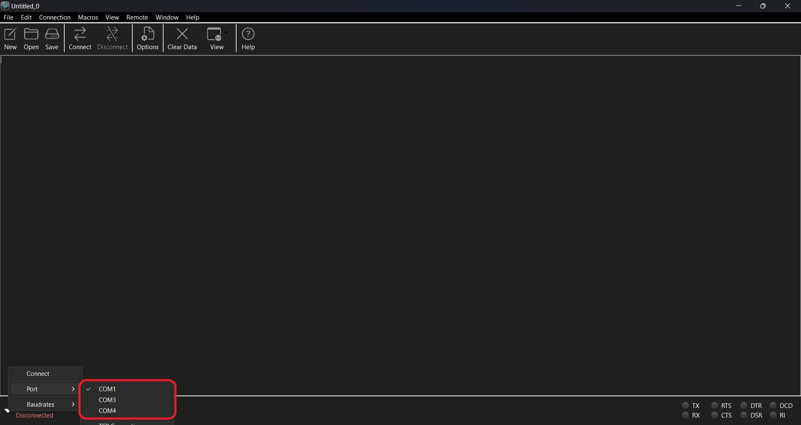
Connect the μC to the computer without pressing the
BOOTSELbutton. Now, re-scan the COM ports so that the μC is detected.
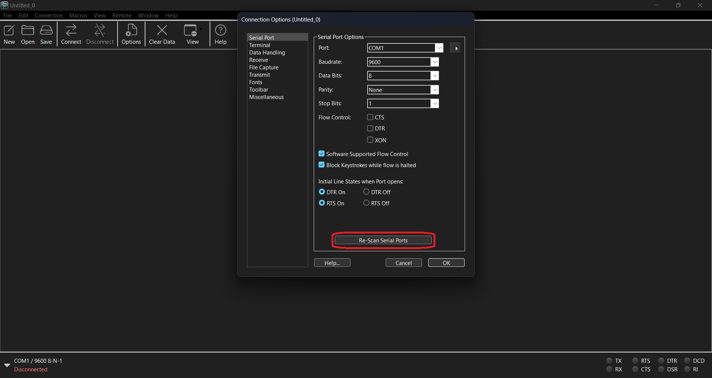

Check for the available COM ports again. You should see a new COM port in the list. Note the newly added COM port number, since it should stay the same in your computer for your μC. In my case, it turned out to be COM5 as visible in the image below. Select the newly added COM port.
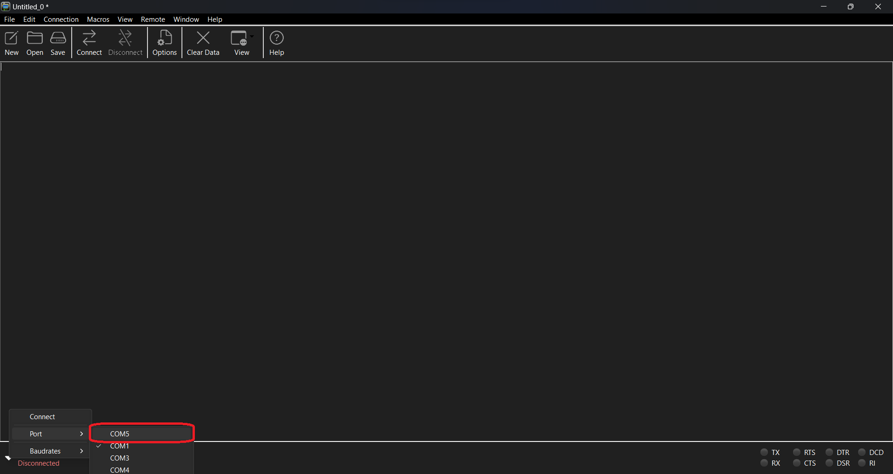
Click on ⇄ Connect button to start communication between the μC and the computer. You should see ‘Hello World!’ being printed out as shown below.

You can stop the communication by clicking on the Disconnect button.
At the time of closing, CoolTerm may ask you to save the settings. Click on Don’t Save button.